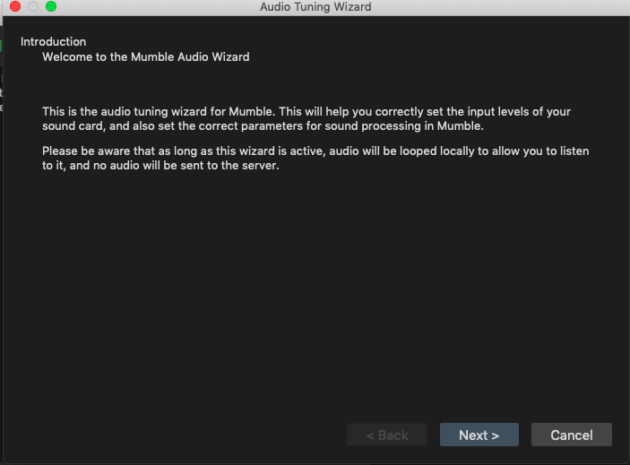
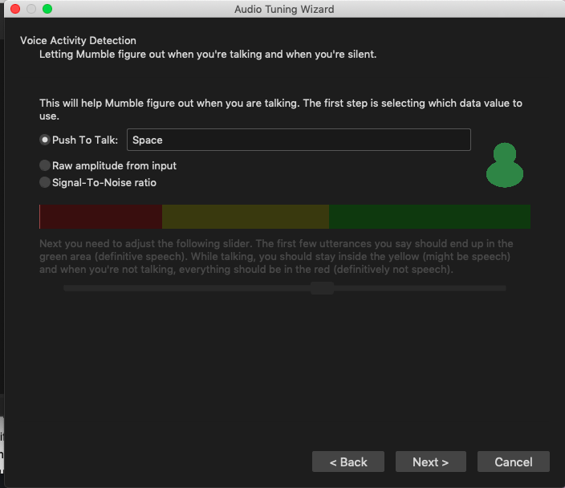

Set-up instructions for Mumble Audio Wizard
In the top panel, click on Configure > Audio Wizard…

Click ‘next’ on the first page of the setup: 
Device selection: ‘default’ option:

Volume tuning: choose lowest value(default 10ms, lowest)

Voice Activity detection: Here, keep the Control Panel also open:
 While following the instructions, remember to lower the
input volume in the control panel so that when you speak with a loud,
excited tone, the bar stays in the blue/green zone.
While following the instructions, remember to lower the
input volume in the control panel so that when you speak with a loud,
excited tone, the bar stays in the blue/green zone. 
Voice Activity Detection: to setup up Push to Talk, click on th text box next to ‘Push to Talk’ and click on a suitable shortcut on your keyboard.  For continuous recording, ‘Raw Amplitude’ gave better speech detection results. Adjust the slider until your speech is in the yellow or green zone.
Quality and notifications: Custom setting is appropriate if one anticipates bandwidth issues and has setup a custom value in
murmur.ini. Else, choose ‘high’. Disable Text-to-speech, so that the recording is not interrupted by the TTS: [Note: TTS can also be disabled from the ‘configuration’ option in the Mumble toolbar.]
Positional Audio: click ‘Next’

Click ‘Finish’ on the last page: